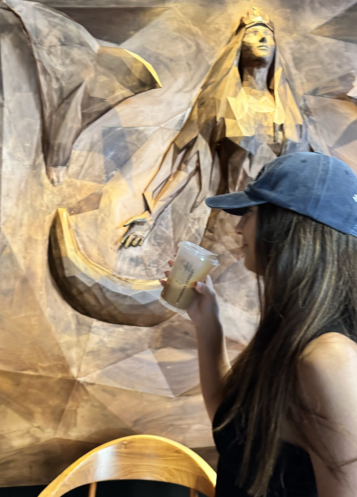

Soy Mora Larghi y actualmente curso el tercer año de la Licenciatura en Negocios Digitales en la UADE. Siempre me atrajo la idea de unir creatividad con estrategia, y encontré en el diseño y el marketing digital un espacio perfecto para hacerlo.
Soy Mora Larghi y actualmente curso el tercer año de la Licenciatura en Negocios Digitales en la UADE. Siempre me atrajo la idea de unir creatividad con estrategia, y encontré en el diseño y el marketing digital un espacio perfecto para hacerlo.
Me apasiona la estética, los detalles y la forma en que las ideas pueden transformarse en proyectos concretos. Trabajé como creadora de contenido en redes sociales, diseñando publicaciones, planificando estrategias y analizando métricas para mejorar el alcance. También me capacité en herramientas como Google Analytics, Google Ads, Power BI y Looker Studio, que me ayudan a entender mejor los datos y tomar decisiones efectivas.
Más allá de lo académico, me gusta definirme como una persona recreativa y curiosa. Siempre estoy buscando algo nuevo para aprender o probar, desde un curso online hasta un hobby distinto. Me encanta la idea de que cada experiencia, por más simple que parezca, suma algo a quién soy.
También disfruto mucho de lo cotidiano: charlas largas con amigos, momentos en familia, una tarde tranquila con música de fondo o un paseo que me saque de la rutina. Son esas cosas simples las que me recargan de motivación y me inspiran para seguir creciendo.
Entre mis intereses están viajar, conocer lugares y culturas diferentes, la música como compañía de cada día y la estética en lo cotidiano, esos pequeños detalles que hacen que lo simple se vuelva especial.
Por eso valoro tanto los detalles: porque creo que son capaces de transformar lo común en algo único. Para mí, son esos gestos, ideas o toques personales los que realmente marcan la diferencia y hacen que algo cobre vida.